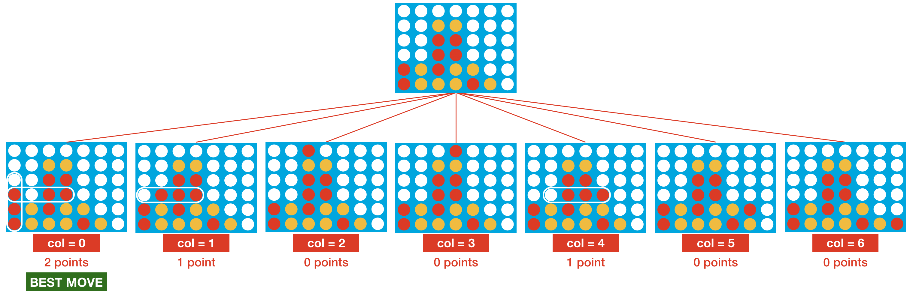
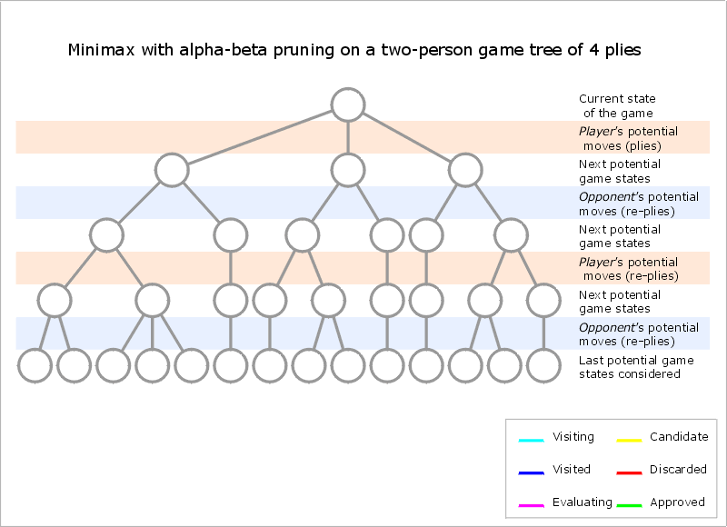

Currently, the only algorithm that you may play against is the AlphaBeta Pruning bot. AlphaBeta Pruning is a technique used in game-playing AI to help the computer figure out the best move to make in a game. It's commonly used in games like Connect Four, where there are many possible moves that the AI can make, but a quick evaluation is needed to determine which move will be the most effective.
Depth allows you to control how many moves the AI bot can "look" ahead. Behind the scenes, it will simulate that number of moves to determine the next best column on the board to drop a piece. This allows you to control the difficulty of the AI, so if you set a depth of 1, you should be able to win easily!
To understand how AlphaBeta Pruning works, think about how you would play a game of Connect Four against a friend. My assumption is that you would try your best to make moves that provide you with three or four-in-a-row's while simultaneously blocking your friend's progression to do the same. In other words, you maximize your chance of winning while minimizing it for your friend.
This AI works in a similar fashion. To determine the next best move to take, it will look at all of the possible moves it can take and assign a "score" to each one based on how good or bad it thinks that move is. From there, it chooses the move with the highest score to maximize its chance of winning.
But here's where it gets interesting: the AI also looks at all of the possible moves you could take after it makes it's own move. It assigns a score to each of the moves you could take, and tries to choose one that minimizes your chance of getting a four-in-a-row. By doing this, it can simulate the game and "look" ahead multiple moves, allowing the bot to make smart and informed decisions.

In the context of AI, pruning is a way of simplifying a complex problem by removing unncessary or irrelevant parts of it. This makes it easier and faster for a computer to find a solution to a problem.
For the Connect Four AI bot, pruning is a necessary technique to include if we want the AI to be faster and smarter. For example, there are 7 possible columns to drop a piece into, and if the AI looks even 5 moves ahead, it would have to calculate the "score" of each board state 75 = 16,807 times. That's a lot of computations, and I personally would not want to play against a slow AI bot. Pruning reduces this number of calculations by skipping over moves that simply aren't likely to be useful, sharply cutting down the amount of time between moves and allowing the AI bot to "look" ahead even further.
